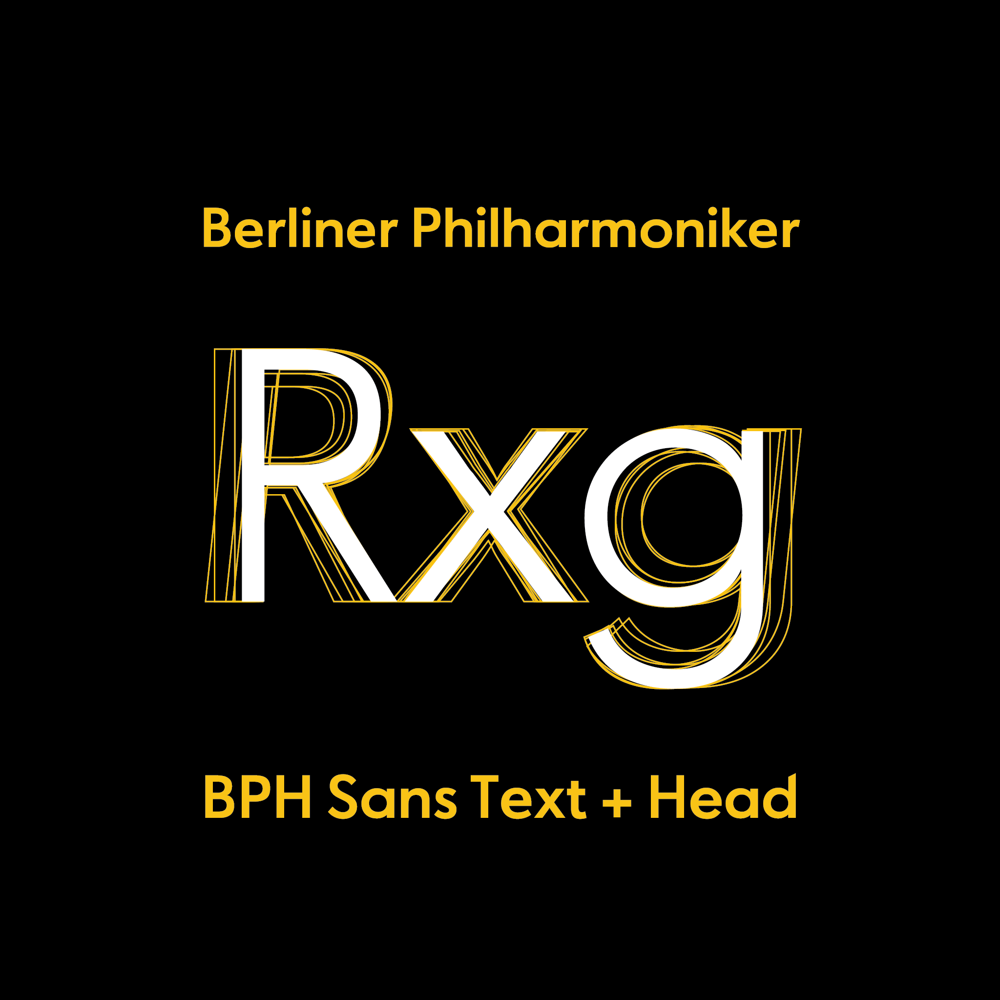

BPH Sans
2019 • variable font production
For the new corporate identity of the Berlin Philharmonic, a new typeface, BPH Sans, was designed. I was brought on board to take care of the production as a variable font, for ease of use in web application.
